- កំណត់និយមន័យនៃអ៊ីពែបូល
- កំណត់សមីការស្តង់ដានិងអាស៊ីមតូតនៃអ៊ីពែបូល
- បំប្លែងសមីការទូទៅនៃអ៊ីពែបូលទៅជាសមីការស្តង់ដា ។
1. សេចក្តីផ្តើម
ប្លង់មួយស្របនឹងអ័ក្សនៃកោនបរិវត្តប្រសព្វផ្ទៃកោនបានខ្សែកោងដែលមានពីរផ្នែកផ្សេងគ្នាហៅថា អ៊ីពែបូល ។
2. និយមន័យនៃអ៊ីពែបូល
ឧទាហរណ៍ : គេបិទក្រដាសមួយសន្លឹកនៅលើបន្ទះក្តារមួយ ។ គេបោះកូនដែកគោលពីរនៅលើបន្ទះក្តារនោះឱ្យបានចម្ងាយ \(\displaystyle 10\text{ cm}\) ពីគ្នា ។ គេកួចខ្សែមួយសរសៃឱ្យបានជាចំណងមួយសម្រាប់ដាក់ចុងខ្មៅដៃ រួចពាក់ខ្សែលើកូនដែកគោលទាំងពីរ (ដូចរូបខាងក្រោម) ។ កាន់ចុងខ្សែទាំងពីរជួបគ្នា ហើយទាញខ្សែឱ្យតឹងដោយខ្មៅដៃ ។ បន្ទាប់មកទាញចុងខ្សែទាំងពីរផ្តួបគ្នាដើម្បីឱ្យខ្មៅដៃផ្លាស់ទីគន្លងដែលគូសបានដោយខ្មៅដៃជាអ៊ីពែបូល ។ ធ្វើឡើងវិញម្តងទៀត ដោយដាក់បញ្ច្រាសទីតាំងនៃខ្សែដើម្បីបង្កើតបានមែកម្ខាងទៀតនៃអ៊ីពែបូល ។
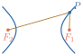
និយមន័យ អ៊ីពែបូលគឺជាសំណុំនៃចំណុច នៅក្នុងប្លង់ដែលមានផលដករវាងចម្ងាយពីចំណុចនេះទៅចំណុចនឹងពីរ ជាចំនួនថេរ ។ ចំណុចនឹងទាំងពីរហៅថា កំណុំ នៃអ៊ីពែបូល ។
គេតាង
- កំណុំទាំងពីរនៃអ៊ីពែបូល ដោយអក្សរ \(\displaystyle F_{1}\) និង \(\displaystyle F_{2}\)
- បន្ទាត់ \(\displaystyle F_{1}F_{2}\) ហៅថា “អ័ក្សទទឹង”
- \(\displaystyle V_{1}\) និង \(\displaystyle V_{2}\) ជាចំណុចប្រសព្វរវាងអ័ក្សទទឹងនិងអ៊ីពែបូល ហៅថា “កំពូល” នៃអ៊ីពែបូល
- \(\displaystyle I\) ជាចំណុចកណ្តាលនៃអង្កត់ \(\displaystyle F_{1}F_{2}\) ហៅថា “ផ្ចិត” នៃអ៊ីពែបូល
- \(\displaystyle IF_{1} = IF_{2} = c\) និង \(\displaystyle IV_{1} = IV_{2} = a\)
- មេដ្យាទ័រនៃអង្កត់ \(\displaystyle F_{1}F_{2}\) ហៅថា “អ័ក្សឆ្លាស់”
- \(\displaystyle c > a > 0\)
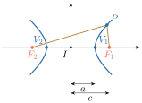
តាមនិយមន័យ ចំពោះគ្រប់ចំណុច \(\displaystyle P\) ស្ថិតនៅលើអ៊ីពែបូលដែលមានកំណុំ \(\displaystyle F_{1}\) និង \(\displaystyle F_{2}\) គេបាន \(\displaystyle |PF_{1} - PF_{2}|\) ជាចំនួនថេរ ។ ព្រោះចំពោះចំណុច \(\displaystyle P, V_{1}, V_{2}\) ស្ថិតនៅលើអ៊ីពែបូលនោះ
ដូច្នេះ ចំពោះគ្រប់ចំណុច \(\displaystyle P\) នៅលើអ៊ីពែបូល នោះ \(\displaystyle |PF_{1} - PF_{2}|\) ជាចំនួនថេរ ។
3. សមីការនៃអ៊ីពែបូល
3.1. សមីការស្តង់ដានៃអ៊ីពែបូលដែលមានផ្ចិតត្រង់គល់អ័ក្សកូអរដោនេ
គេប្រើនិយមន័យ ដើម្បីកំណត់សមីការអ៊ីពែបូលដែលមានផ្ចិត \(\displaystyle (0, 0)\) ។ ដោយហេតុថាអ៊ីពែបូលអាស្រ័យនឹងកំណុំទាំងពីរ ។ ដូច្នេះគេត្រូវកំណត់កូអរដោនេរបស់កំណុំទាំងពីរជាមុនសិន ។ យកកំណុំទាំងពីរ \(\displaystyle F_{1}\) និង \(\displaystyle F_{2}\) ស្ថិតនៅចម្ងាយ \(\displaystyle c\) ឯកតាពីផ្ចិត \(\displaystyle (0, 0)\) ។
ក. ករណីអ័ក្សទទឹងស្ថិតនៅលើអ័ក្សអាប់ស៊ីស
គេបានកូអរដោនេនៃកំណុំទាំងពីរគឺ \(\displaystyle F_{1}(c, 0)\) និង \(\displaystyle F_{2}(-c, 0)\) តាង \(\displaystyle P(x, y)\) ជាចំណុចមួយស្ថិតនៅលើអ៊ីពែបូល ហើយយកកំពូលទាំងពីរ \(\displaystyle V_{1}\) និង \(\displaystyle V_{2}\) ស្ថិតនៅចម្ងាយ \(\displaystyle a\) ឯកតាពីផ្ចិត \(\displaystyle (0, 0)\)
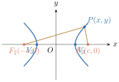
តាមនិយមន័យគេបាន
ចែកអង្គទាំងពីរនឹង \(\displaystyle a^{2}b^{2}\) គេបាន \(\displaystyle \frac{x^{2}}{a^{2}} - \frac{y^{2}}{b^{2}} = 1\) ហៅថាសមីការស្តង់ដានៃអ៊ីពែបូលដែលមានផ្ចិតត្រង់គល់អ័ក្សកូអរដោនេ ហើយមានអ័ក្សទទឹងស្ថិតនៅលើអ័ក្សអាប់ស៊ីស ។
- កូអរដោនេកំពូល : ដើម្បីរកកំពូលនៃអ៊ីពែបូលរបស់សមីការនេះ គេឱ្យ \(\displaystyle y = 0\) នោះកំពូលផ្ទៀងផ្ទាត់សមីការ \(\displaystyle \frac{x^{2}}{a^{2}} = 1\) នោះគេបាន \(\displaystyle x = \pm a\) ។
ដូច្នេះ កំពូលនៃអ៊ីពែបូលគឺ \(\displaystyle V_{1}(a, 0)\) និង \(\displaystyle V_{2}(-a, 0)\) ។ - សមីការអាស៊ីមតូត
បើគេដោះស្រាយសមីការ \(\displaystyle \frac{x^{2}}{a^{2}} - \frac{y^{2}}{b^{2}} = 1\) រក \(\displaystyle y\) គេបាន \(\displaystyle y = \pm \frac{b}{a}\sqrt{x^{2} - a^{2}}\)
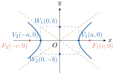
បើ \(\displaystyle x^{2} - a^{2} < 0\) គេបាន \(\displaystyle -a < x < a\) នោះគ្មានចំណុច \(\displaystyle P(x, y)\) នៅលើក្រាបទេ បើ \(\displaystyle x^{2} - a^{2} \ge 0\) គេបាន \(\displaystyle x \ge a\) ឬ \(\displaystyle x \le -a\) នោះមានចំណុច \(\displaystyle P(x, y)\) នៅលើក្រាប បើ \(\displaystyle x \ge a\) គេអាចសរសេរសមីការ \(\displaystyle y = \pm \frac{b}{a}\sqrt{x^{2} - a^{2}}\) ជាទម្រង់ \(\displaystyle y = \pm \frac{b}{a}\sqrt{x^{2}\left(1 - \frac{a^{2}}{x^{2}}\right)} = \pm \frac{b}{a}x\sqrt{1 - \frac{a^{2}}{x^{2}}}\) បើ \(\displaystyle x \to +\infty\) នោះកន្សោម \(\displaystyle 1 - \frac{a^{2}}{x^{2}}\) ខិតជិត \(\displaystyle 1\) ហើយកូអរដោនេ \(\displaystyle y\) នៃចំណុច \(\displaystyle P(x, y)\) នៅលើអ៊ីពែបូលខិតជិត \(\displaystyle \frac{b}{a}x\) ឬ \(\displaystyle -\frac{b}{a}x\) ។ ដូច្នេះ ចំណុច \(\displaystyle P(x, y)\) ខិតជិតបន្ទាត់ \(\displaystyle y = \frac{b}{a}x\) កាលណា \(\displaystyle y\) ជាចំនួនវិជ្ជមាន ឬខិតជិតបន្ទាត់ \(\displaystyle y = -\frac{b}{a}x\) កាលណា \(\displaystyle y\) ជាចំនួនអវិជ្ជមាន ។ ស្ថានភាពត្រូវគ្នានេះមានបើ \(\displaystyle x \le -a\) ។ បន្ទាត់មានសមីការ \(\displaystyle y = \pm \frac{b}{a}x\) ជាអាស៊ីមតូតនៃអ៊ីពែបូល \(\displaystyle \frac{x^{2}}{a^{2}} - \frac{y^{2}}{b^{2}} = 1\) ។
វិធីសង់បន្ទាត់អាស៊ីមតូតនៃអ៊ីពែបូល : ដើម្បីគូសអាស៊ីមតូត ដំបូងគេត្រូវ
- ដៅកំពូល \(\displaystyle V_{1}(a, 0)\) និង \(\displaystyle V_{2}(-a, 0)\) និងចំណុច \(\displaystyle W_{1}(0, b)\) និង \(\displaystyle W_{2}(0, -b)\)
សង់ចតុកោណកែងដែល
- វិមាត្រទី 1 មានប្រវែងស្មើនឹង \(\displaystyle V_{1}V_{2}\) ឯកតា និង \(\displaystyle W_{1}, W_{2}\) ជាចំណុចកណ្តាលនៃវិមាត្រនេះរៀងគ្នា
- វិមាត្រទី 2 មានប្រវែងស្មើនឹង \(\displaystyle W_{1}W_{2}\) ឯកតា និង \(\displaystyle V_{1}, V_{2}\) ជាចំណុចកណ្តាលនៃវិមាត្រនេះរៀងគ្នា
- គូសបន្ទាត់កាត់តាមកំពូលឈមនៃចតុកោណកែង គេបានបន្ទាត់ទាំងពីរជាអាស៊ីមតូតនៃអ៊ីពែបូល ។
ខ. ករណីអ័ក្សទទឹងស្ថិតនៅលើអ័ក្សអរដោនេ
នៅក្នុងផ្នែកខាងលើ គេបានរកឃើញថាសមីការ \(\displaystyle \frac{x^{2}}{a^{2}} - \frac{y^{2}}{b^{2}} = 1\) ជាសមីការស្តង់ដានៃអ៊ីពែបូល ដែលមានផ្ចិត \(\displaystyle (0, 0)\) និងកំណុំ \(\displaystyle (\pm c, 0)\) ដែលមានអ័ក្សទទឹងស្ថិតនៅលើអ័ក្សអាប់ស៊ីសហើយ \(\displaystyle c^{2} = a^{2} + b^{2}\) ។ បើគេប្តូរ \(\displaystyle x\) ជា \(\displaystyle y\) និង \(\displaystyle y\) ជា \(\displaystyle x\) ក្នុងសមីការខាងលើ គេបាន \(\displaystyle \frac{y^{2}}{a^{2}} - \frac{x^{2}}{b^{2}} = 1\) ជាសមីការនៃរូបឆ្លុះរបស់អ៊ីពែបូល \(\displaystyle \frac{x^{2}}{a^{2}} - \frac{y^{2}}{b^{2}} = 1\) ធៀបនឹងបន្ទាត់ \(\displaystyle x = y\) ។ ដូច្នេះ សមីការ \(\displaystyle \frac{y^{2}}{a^{2}} - \frac{x^{2}}{b^{2}} = 1\) ជាសមីការអ៊ីពែបូលដែលមានផ្ចិត \(\displaystyle (0, 0)\) កំពូល \(\displaystyle (0, \pm a)\) និងកំណុំ \(\displaystyle (0, \pm c)\) ហើយអ័ក្សទទឹងស្ថិតនៅលើអ័ក្សអរដោនេដែល \(\displaystyle c^{2} = a^{2} + b^{2}\) ។
សមីការអ៊ីពែបូលដែលមានផ្ចិតត្រង់គល់អ័ក្សកូអរដោនេ
- ក.
ករណីអ័ក្សទទឹងស្ថិតនៅលើអ័ក្សអាប់ស៊ីសមាន
- សមីការស្តង់ដា \(\displaystyle \frac{x^{2}}{a^{2}} - \frac{y^{2}}{b^{2}} = 1 \quad (a > 0, b > 0)\)
- កំពូលទាំងពីរមានកូអរដោនេ \(\displaystyle (a, 0)\) និង \(\displaystyle (-a, 0)\)
- កំណុំទាំងពីរមានកូអរដោនេ \(\displaystyle (c, 0)\) និង \(\displaystyle (-c, 0)\) ដែល \(\displaystyle c^{2} = a^{2} + b^{2}\)
- សមីការអាស៊ីមតូតទាំងពីរគឺ \(\displaystyle y = \frac{b}{a}x\) និង \(\displaystyle y = -\frac{b}{a}x\) ។
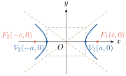
- ខ.
ករណីអ័ក្សទទឹងស្ថិតនៅលើអ័ក្សអរដោនេមាន
- សមីការស្តង់ដា \(\displaystyle \frac{y^{2}}{a^{2}} - \frac{x^{2}}{b^{2}} = 1 \quad (a > 0, b > 0)\)
- កំពូលទាំងពីរមានកូអរដោនេ \(\displaystyle (0, a)\) និង \(\displaystyle (0, -a)\)
- កំណុំទាំងពីរមានកូអរដោនេ \(\displaystyle (0, c)\) និង \(\displaystyle (0, -c)\) ដែល \(\displaystyle c^{2} = a^{2} + b^{2}\)
- សមីការអាស៊ីមតូតទាំងពីរគឺ \(\displaystyle y = \frac{a}{b}x\) និង \(\displaystyle y = -\frac{a}{b}x\) ។
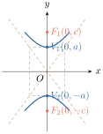
វិធីសង់ក្រាបតាងអ៊ីពែបូល :
- ដៅផ្ចិត កំពូល និងកំណុំ
សង់បន្ទាត់អាស៊ីមតូតទាំងពីរ
- សង់ចតុកោណកែងមានវិមាត្រ \(\displaystyle 2a\) និង \(\displaystyle 2b\) ដែលវិមាត្ររបស់វាមានចំណុចចុងនៃអង្កត់ \(\displaystyle 2a\) និង \(\displaystyle 2b\) ជាចំណុចកណ្តាលរៀងគ្នា
- បន្ទាត់កាត់ផ្ចិតនិងកំពូលមុំឈមគ្នានៃចតុកោណកែងនេះ ជាបន្ទាត់អាស៊ីមតូតទាំងពីររបស់អ៊ីពែបូល ។
ចំណុចកាត់ :
- របៀបទី 1 :
បើកំណុំ \(\displaystyle F(\pm c, 0)\) នោះយកចំណុចកាត់ \(\displaystyle \begin{cases} x = \pm c \\ y = \pm \frac{b^{2}}{a} \end{cases}\)
បើកំណុំ \(\displaystyle F(0, \pm c)\) នោះយកចំណុចកាត់ \(\displaystyle \begin{cases} y = \pm c \\ x = \pm \frac{b^{2}}{a} \end{cases}\) - របៀបទី 2 : ត្រង់កំណុំ គូសអង្កត់មានប្រវែង \(\displaystyle \frac{2b^{2}}{a}\) (អង្កត់ទាំងពីរមានអ័ក្សទទឹងជាមេដ្យាទ័រ) ។ គេបានចំណុចចុងនៃអង្កត់ទាំងពីរជាចំណុចកាត់របស់អ៊ីពែបូល ។
- របៀបទី 1 :
គេឱ្យសមីការ \(\displaystyle 9x^{2} - 16y^{2} = 144\) ។
- ក. បង្ហាញថាសមីការនេះជាសមីការអ៊ីពែបូល ។ កំណត់កូអរដោនេផ្ចិត កំពូល និងកំណុំ ។
- ខ. រកសមីការអាស៊ីមតូត ។
- គ. សង់អ៊ីពែបូល ។
- ក.
បង្ហាញថាសមីការនេះជាសមីការអ៊ីពែបូល
គេមាន \(\displaystyle 9x^{2} - 16y^{2} = 144\) ចែកអង្គទាំងពីរនៃសមីការនេះនឹង \(\displaystyle 144\) គេបាន \(\displaystyle \frac{9x^{2}}{144} - \frac{16y^{2}}{144} = 1\) ឬ \(\displaystyle \frac{x^{2}}{16} - \frac{y^{2}}{9} = 1\) ជាសមីការស្តង់ដាអ៊ីពែបូលមានអ័ក្សទទឹងជាអ័ក្សអាប់ស៊ីស ។- កំណត់កូអរដោនេផ្ចិត កំពូល និងកំណុំអ៊ីពែបូល
ដោយសមីការ \(\displaystyle \frac{x^{2}}{16} - \frac{y^{2}}{9} = 1\) មានទម្រង់ \(\displaystyle \frac{x^{2}}{a^{2}} - \frac{y^{2}}{b^{2}} = 1\) គេបាន
\(\displaystyle a = 4\) និង \(\displaystyle b = 3\) ហើយ \(\displaystyle c^{2} = a^{2} + b^{2} = 16 + 9 = 25 \implies c = 5\)
គេបាន
កូអរដោនេផ្ចិត \(\displaystyle I(0, 0)\)
កូអរដោនេកំពូលទាំងពីរគឺ \(\displaystyle V(\pm a, 0) = V(\pm 4, 0) = \begin{cases} V_{1}(4, 0) \\ V_{2}(-4, 0) \end{cases}\)
កូអរដោនេកំណុំទាំងពីរ \(\displaystyle F(\pm c, 0) = F(\pm 5, 0) = \begin{cases} F_{1}(5, 0) \\ F_{2}(-5, 0) \end{cases}\)
- កំណត់កូអរដោនេផ្ចិត កំពូល និងកំណុំអ៊ីពែបូល
- ខ. កំណត់សមីការអាស៊ីមតូតនៃអ៊ីពែបូល
ដោយសមីការអ៊ីពែបូល \(\displaystyle \frac{x^{2}}{16} - \frac{y^{2}}{9} = 1\)
នោះសមីការអាស៊ីមតូតទាំងពីរគឺ \(\displaystyle y = \pm \frac{b}{a}x = \pm \frac{3}{4}x\) - គ. សង់ក្រាបតាងអ៊ីពែបូល
ដៅផ្ចិត \(\displaystyle (0, 0)\) កំពូល \(\displaystyle V(\pm 4, 0)\) កំណុំ \(\displaystyle F(\pm 5, 0)\)
សង់អាស៊ីមតូត \(\displaystyle y = \pm \frac{3}{4}x\)
សង់ចតុកោណកែងមានវិមាត្រ \(\displaystyle 2a = 8\) និង \(\displaystyle 2b = 6\)
គូសបន្ទាត់កាត់តាមផ្ចិត និងកំពូលមុំឈមនៃចតុកោណកែងនេះ នោះបន្ទាត់ទាំងពីរជាអាស៊ីមតូតនៃអ៊ីពែបូល ។
ចំណុចកាត់ : ត្រង់កំណុំគូសអង្កត់មានប្រវែង \(\displaystyle \frac{2b^{2}}{a} = \frac{9}{2} = 4.5\) (អង្កត់ទាំងពីរមានអ័ក្សទទឹងជាមេដ្យាទ័រ) គេបានចុងនៃអង្កត់ជាចំណុចកាត់របស់អ៊ីពែបូល ។
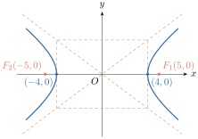
រកសមីការអ៊ីពែបូលដែលមានកូអរដោនេកំពូល \(\displaystyle V_{1}(0, 4)\) និង \(\displaystyle V_{2}(0, -4)\) ហើយក្រាបកាត់តាមចំណុច \(\displaystyle (3, 4\sqrt{2})\) រួចសង់ក្រាបតាងអ៊ីពែបូលនេះ ។
- កំណត់សមីការអ៊ីពែបូល
បម្រាប់ : កំពូល \(\displaystyle V_{1}(0, 4)\) និង \(\displaystyle V_{2}(0, -4)\) កាត់តាមចំណុច \(\displaystyle (3, 4\sqrt{2})\)
នោះកូអរដោនេផ្ចិត \(\displaystyle I\left(\frac{0+0}{2}, \frac{4-4}{2}\right) = I(0, 0)\)
តាមកូអរដោនេផ្ចិតនិងកំពូល នោះអ៊ីពែបូលមានអ័ក្សទទឹងស្ថិតនៅលើអ័ក្សអរដោនេ ហើយសមីការអ៊ីពែបូលមានទម្រង់ \(\displaystyle \frac{y^{2}}{a^{2}} - \frac{x^{2}}{b^{2}} = 1\), \(\displaystyle (a > 0, b > 0)\)
ដោយអ៊ីពែបូលមានកំពូល \(\displaystyle V_{1}(0, 4)\) និង \(\displaystyle V_{2}(0, -4)\) នោះ \(\displaystyle a = 4 \implies a^{2} = 4^{2} = 16\)
\(\displaystyle \implies\) សមីការអ៊ីពែបូល \(\displaystyle \frac{y^{2}}{16} - \frac{x^{2}}{b^{2}} = 1\)
តែក្រាបកាត់តាមចំណុច \(\displaystyle (3, 4\sqrt{2})\) នាំឱ្យ \(\displaystyle \frac{(4\sqrt{2})^{2}}{16} - \frac{3^{2}}{b^{2}} = 1 \implies b^{2} = 9\)
\(\displaystyle \implies\) សមីការអ៊ីពែបូល \(\displaystyle \frac{y^{2}}{16} - \frac{x^{2}}{9} = 1\) ។
ដូច្នេះ សមីការអ៊ីពែបូល \(\displaystyle \frac{y^{2}}{16} - \frac{x^{2}}{9} = 1\) ។ - សង់ក្រាបតាងអ៊ីពែបូល
ដៅផ្ចិត \(\displaystyle (0, 0)\) កំពូល \(\displaystyle (0, \pm 4)\) កំណុំ \(\displaystyle (0, \pm 5)\)
សង់អាស៊ីមតូត \(\displaystyle y = \pm \frac{4}{3}x\)
សង់ចតុកោណកែងមានវិមាត្រ \(\displaystyle 2a = 8\) និង \(\displaystyle 2b = 6\)
គេបានអាស៊ីមតូតជាបន្ទាត់កាត់តាមផ្ចិតនិងកំពូលឈមនៃចតុកោណកែងនេះ
ចំណុចកាត់ : ត្រង់កំណុំទាំងពីរ គូសអង្កត់កែងនឹងអ័ក្សទទឹងមានប្រវែង \(\displaystyle \frac{2b^{2}}{a} = \frac{9}{2} = 4.5\) (អង្កត់ទាំងពីរមានអ័ក្សទទឹងជាមេដ្យាទ័រ) គេបានក្រាបអ៊ីពែបូលកាត់តាមចំណុចចុងនៃអង្កត់នេះ ។
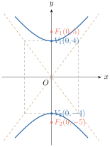
គេឱ្យសមីការអ៊ីពែបូល \(\displaystyle 4x^{2} - 9y^{2} = -36\)
- ក. រកសមីការស្តង់ដានៃអ៊ីពែបូល
- ខ. រកកូអរដោនេនៃកំពូល កំណុំ និងសមីការអាស៊ីមតូតនៃអ៊ីពែបូល
- គ. សង់អ៊ីពែបូលនោះ ។
មើលចម្លើយ
- ក. សមីការស្តង់ដា \(\displaystyle \frac{y^{2}}{4} - \frac{x^{2}}{9} = 1\)
- ខ. កំពូល \(\displaystyle V(0, \pm 2)\) កំណុំ \(\displaystyle F(0, \pm \sqrt{13})\) សមីការអាស៊ីមតូត \(\displaystyle y = \pm \frac{2}{3}x\) ។
អ៊ីពែបូលមួយមានកំពូល \(\displaystyle V_{1}(3, 0)\) និង \(\displaystyle V_{2}(-3, 0)\) ហើយកាត់តាមចំណុច \(\displaystyle P(5, 2)\)
- ក. រកសមីការស្តង់ដា កូអរដោនេកំណុំ និងសមីការអាស៊ីមតូត
- ខ. សង់អ៊ីពែបូលនោះ ។
មើលចម្លើយ
- ក. សមីការ \(\displaystyle \frac{x^{2}}{9} - \frac{4y^{2}}{9} = 1\) កំណុំ \(\displaystyle F\left(\pm \frac{3\sqrt{5}}{2}, 0\right)\) និងសមីការអាស៊ីមតូត \(\displaystyle y = \pm \frac{1}{2}x\) ។
3.2. សមីការស្តង់ដានៃអ៊ីពែបូលដែលមានផ្ចិតខុសពីគល់អ័ក្សកូអរដោនេ
ឧទាហរណ៍ : គេឱ្យសមីការ \(\displaystyle \frac{(x - 3)^{2}}{4} - \frac{(y + 2)^{2}}{9} = 1\)
- ក. កំណត់ប្រភេទនៃរូបធរណីមាត្រដែលជាក្រាបតាងសមីការខាងលើ
- ខ. រកកូអរដោនេផ្ចិត កំពូល កំណុំ និងសមីការបន្ទាត់អាស៊ីមតូតនៃរូបនោះ រួចសង់ក្រាបរបស់វា ។
ដំណោះស្រាយ
- ក. បើគេជំនួស \(\displaystyle x\) ដោយ \(\displaystyle (x - 3)\) និង \(\displaystyle y\) ដោយ \(\displaystyle (y + 2)\) ក្នុងសមីការ \(\displaystyle \frac{x^{2}}{4} - \frac{y^{2}}{9} = 1\) នៃអ៊ីពែបូល \(\displaystyle H\) នោះគេបានសមីការ \(\displaystyle \frac{(x - 3)^{2}}{4} - \frac{(y + 2)^{2}}{9} = 1\) ជាសមីការអ៊ីពែបូល \(\displaystyle H'\) នេះមានន័យថា \(\displaystyle H'\) បានមកពីការរំកិលអ៊ីពែបូល \(\displaystyle H\) ស្របនឹងអ័ក្សអាប់ស៊ីសទៅខាងស្តាំចំនួន \(\displaystyle 3\) ឯកតា ហើយស្របនឹងអ័ក្សអរដោនេចុះក្រោមចំនួន \(\displaystyle 2\) ឯកតា ។
- ខ. អ៊ីពែបូលតាង \(\displaystyle \frac{(x - 3)^{2}}{4} - \frac{(y + 2)^{2}}{9} = 1\) ប៉ុននឹងអ៊ីពែបូលតាង \(\displaystyle \frac{x^{2}}{4} - \frac{y^{2}}{9} = 1\)
នោះគេបាន \(\displaystyle a^{2} = 4\), \(\displaystyle b^{2} = 9\), \(\displaystyle c^{2} = a^{2} + b^{2} = 13\) ឬ \(\displaystyle a = 2\), \(\displaystyle b = 3\), \(\displaystyle c = \sqrt{13}\)
ផ្ចិតមានកូអរដោនេ \(\displaystyle (3, -2)\)
កំពូលទាំងពីរមានកូអរដោនេ \(\displaystyle (3 + 2, -2)\) ឬ \(\displaystyle (5, -2)\) និង \(\displaystyle (3 - 2, -2)\) ឬ \(\displaystyle (1, -2)\)
កំណុំទាំងពីរមានកូអរដោនេ \(\displaystyle (3 + \sqrt{13}, -2)\) និង \(\displaystyle (3 - \sqrt{13}, -2)\) ។
សមីការអាស៊ីមតូតទាំងពីរ \(\displaystyle y + 2 = \pm \frac{3}{2}(x - 3)\) ឬ \(\displaystyle y = \frac{3}{2}(x - 3) - 2\) និង \(\displaystyle y = -\frac{3}{2}(x - 3) - 2\) ។
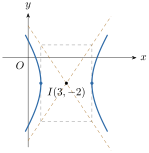
ឧទាហរណ៍ខាងលើ គេសង្កេតឃើញថា បើរំកិលអ៊ីពែបូលដែលមានផ្ចិតនៅត្រង់គល់អ័ក្សកូអរដោនេ និងមានអ័ក្សទទឹងនៅលើអ័ក្សអាប់ស៊ីសចំនួន \(\displaystyle 3\) ឯកតា ទៅខាងស្តាំស្របនឹងអ័ក្សអាប់ស៊ីស និង \(\displaystyle 2\) ឯកតា ចុះក្រោមស្របនឹងអ័ក្សអរដោនេ នោះគេបានអ៊ីពែបូលមួយទៀតដែលមានផ្ចិតនៅត្រង់ចំណុច \(\displaystyle (3, -2)\) ហើយអ័ក្សទទឹងស្របនឹងអ័ក្សអាប់ស៊ីសមានសមីការស្តង់ដា \(\displaystyle \frac{(x - 3)^{2}}{4} - \frac{(y + 2)^{2}}{9} = 1\) ។
សមីការស្តង់ដាអ៊ីពែបូលដែលមានផ្ចិត \(\displaystyle (h, k)\)
អ័ក្សទទឹងស្របនឹងអ័ក្សអាប់ស៊ីស \(\displaystyle \frac{(x - h)^{2}}{a^{2}} - \frac{(y - k)^{2}}{b^{2}} = 1 \quad (a > 0, b > 0)\)
- កូអរដោនេកំពូលទាំងពីរគឺ \(\displaystyle V_{1}(h - a, k)\) និង \(\displaystyle V_{2}(h + a, k)\)
- កូអរដោនេកំណុំទាំងពីរគឺ \(\displaystyle F_{1}(h - c, k)\) និង \(\displaystyle F_{2}(h + c, k)\) ដែល \(\displaystyle c^{2} = a^{2} + b^{2}\)
- សមីការអាស៊ីមតូតទាំងពីរគឺ \(\displaystyle y = k + \frac{b}{a}(x - h)\) និង \(\displaystyle y = k - \frac{b}{a}(x - h)\) ។
អ័ក្សទទឹងស្របនឹងអ័ក្សអរដោនេគឺ \(\displaystyle \frac{(y - k)^{2}}{a^{2}} - \frac{(x - h)^{2}}{b^{2}} = 1, \quad (a > 0, b > 0)\)
- កូអរដោនេកំពូលទាំងពីរគឺ \(\displaystyle V_{1}(h, k - a)\) និង \(\displaystyle V_{2}(h, k + a)\)
- កូអរដោនេកំណុំទាំងពីរគឺ \(\displaystyle F_{1}(h, k - c)\) និង \(\displaystyle F_{2}(h, k + c)\) ដែល \(\displaystyle c^{2} = a^{2} + b^{2}\)
- សមីការអាស៊ីមតូតទាំងពីរគឺ \(\displaystyle y = k + \frac{a}{b}(x - h)\) និង \(\displaystyle y = k - \frac{a}{b}(x - h)\) ។
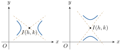
គេមានសមីការ \(\displaystyle 16(y - 2)^{2} - 9(x + 2)^{2} = 144\)
- ក. បង្ហាញថាសមីការនេះជាសមីការអ៊ីពែបូល
- ខ. រកកូអរដោនេផ្ចិត កំពូល កំណុំ និងសមីការបន្ទាត់ប្រាប់ទិសនៃអ៊ីពែបូល
- គ. សង់ក្រាបតាងអ៊ីពែបូលនេះ ។
- ក. បង្ហាញថាសមីការ \(\displaystyle 16(y - 2)^{2} - 9(x + 2)^{2} = 144\) ជាសមីការអ៊ីពែបូល
គេបាន \(\displaystyle 16(y - 2)^{2} - 9(x + 2)^{2} = 144 \iff \frac{(y - 2)^{2}}{9} - \frac{(x + 2)^{2}}{16} = 1\) ជាសមីការស្តង់ដានៃអ៊ីពែបូលដែលមានអ័ក្សទទឹងស្របនឹងអ័ក្សអរដោនេ ។ - ខ. កំណត់កូអរដោនេផ្ចិត កំពូល កំណុំ និងសមីការបន្ទាត់ប្រាប់ទិសនៃអ៊ីពែបូល
ដោយសមីការអ៊ីពែបូល \(\displaystyle \frac{(y - 2)^{2}}{9} - \frac{(x + 2)^{2}}{16} = 1\) នោះ
\(\displaystyle h = -2\), \(\displaystyle k = 2\), \(\displaystyle a^{2} = 9\), \(\displaystyle b^{2} = 16\), \(\displaystyle c^{2} = a^{2} + b^{2} = 9 + 16 = 25\) ឬ \(\displaystyle a = 3\), \(\displaystyle b = 4\), \(\displaystyle c = 5\)
គេបាន
កូអរដោនេផ្ចិត \(\displaystyle I(h, k) = I(-2, 2)\)
កូអរដោនេកំពូល \(\displaystyle V(h, k \pm a) = V(-2, 2 \pm 3) = \begin{cases} V_{1}(-2, 5) \\ V_{2}(-2, -1) \end{cases}\)
កូអរដោនេកំណុំ \(\displaystyle F(h, k \pm c) = F(-2, 2 \pm 5) = \begin{cases} F_{1}(-2, 7) \\ F_{2}(-2, -3) \end{cases}\)
សមីការបន្ទាត់អាស៊ីមតូត \(\displaystyle y = \pm \frac{3}{4}(x + 2) + 2\) ឬ \(\displaystyle y = \frac{3}{4}x + \frac{7}{2}\) និង \(\displaystyle y = -\frac{3}{4}x + \frac{1}{2}\) ។
ដូច្នេះ អ៊ីពែបូលមានផ្ចិត \(\displaystyle I(-2, 2)\) កំពូល \(\displaystyle V_{1}(-2, 5)\), \(\displaystyle V_{2}(-2, -1)\) កំណុំ \(\displaystyle F_{1}(-2, 7)\), \(\displaystyle F_{2}(-2, -3)\) និងសមីការអាស៊ីមតូត \(\displaystyle y = \frac{3}{4}x + \frac{7}{2}\), \(\displaystyle y = -\frac{3}{4}x + \frac{1}{2}\) ។ - គ.
សង់ក្រាបតាងអ៊ីពែបូល
- ដៅចំណុច : ផ្ចិត \(\displaystyle (-2, 2)\) កំពូល \(\displaystyle (-2, 5)\), \(\displaystyle (-2, -1)\) កំណុំ \(\displaystyle (-2, 7)\), \(\displaystyle (-2, -3)\)
- សង់អាស៊ីមតូត \(\displaystyle y = \frac{3}{4}x + \frac{7}{2}\) និង \(\displaystyle y = -\frac{3}{4}x + \frac{1}{2}\)
- សង់ចតុកោណកែងមានវិមាត្រ \(\displaystyle 2a = 6\) និង \(\displaystyle 2b = 8\)
គូសបន្ទាត់កាត់តាមផ្ចិត និងកំពូលឈមនៃចតុកោណកែងនេះ - ចំណុចកាត់ : ត្រង់កំណុំ គូសអង្កត់កែងអ័ក្សទទឹងមានប្រវែង \(\displaystyle \frac{2b^{2}}{a} = \frac{2 \times 16}{3} = \frac{32}{3}\) (អង្កត់ទាំងពីរមានអ័ក្សទទឹងជាមេដ្យាទ័រ) គេបានចំណុចចុងនៃអង្កត់ទាំងពីរជាចំណុចកាត់របស់អ៊ីពែបូល ។
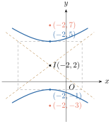
រកសមីការស្តង់ដានៃអ៊ីពែបូលដែលមានកំពូលត្រង់ចំណុច \(\displaystyle (3, -5)\) និង \(\displaystyle (3, 1)\) និងអាស៊ីមតូតមានសមីការ \(\displaystyle y = 2x - 8\) និង \(\displaystyle y = -2x + 4\) រួចសង់អ៊ីពែបូល ។
- កំណត់សមីការស្តង់ដានៃអ៊ីពែបូល
បម្រាប់ : កំពូល \(\displaystyle (3, -5)\) និង \(\displaystyle (3, 1)\)
តាមកូអរដោនេនៃកំពូលទាំងពីរនោះ សមីការស្តង់ដាអ៊ីពែបូលមានទម្រង់ \(\displaystyle \frac{(y - k)^{2}}{a^{2}} - \frac{(x - h)^{2}}{b^{2}} = 1\), \(\displaystyle (a > 0, b > 0)\)
ដោយកូអរដោនេកំពូល \(\displaystyle (3, -5)\) និង \(\displaystyle (3, 1)\) នោះ
\(\displaystyle \begin{cases} h = 3 \\ k - a = -5 \\ k + a = 1 \end{cases} \implies \begin{cases} h = 3 \\ k = -2 \\ a = 1 - k = 1 + 2 = 3 \end{cases}\)
តែអាស៊ីមតូត \(\displaystyle y = 2x - 8\) និង \(\displaystyle y = -2x + 4\) មានទម្រង់ \(\displaystyle y = \pm \frac{a}{b}(x - h) + k\)
នោះ \(\displaystyle \frac{a}{b} = 2 \implies b = \frac{a}{2} = \frac{3}{2}\) គេបានសមីការ \(\displaystyle \frac{(y + 2)^{2}}{9} - \frac{(x - 3)^{2}}{\frac{9}{4}} = 1\)
ដូច្នេះ សមីការស្តង់ដាគឺ \(\displaystyle \frac{(y + 2)^{2}}{9} - \frac{(x - 3)^{2}}{\frac{9}{4}} = 1\) ។ សង់ក្រាបតាងអ៊ីពែបូល
- ដៅ : ផ្ចិត \(\displaystyle (3, -2)\) កំពូល \(\displaystyle (3, -5)\), \(\displaystyle (3, 1)\) និងកំណុំ \(\displaystyle \left(3, -2 \pm \frac{3}{2}\sqrt{5}\right)\)
- សង់បន្ទាត់អាស៊ីមតូតទ្រេត \(\displaystyle y = 2x - 8\) និង \(\displaystyle y = -2x + 4\)
- សង់ចតុកោណកែងមានវិមាត្រ \(\displaystyle 2a = 6\) និង \(\displaystyle 2b = 3\)
- គូសបន្ទាត់កាត់តាមផ្ចិត និងកំពូលមុំឈមនៃចតុកោណកែង
- ចំណុចកាត់ : ត្រង់កំណុំ គូសអង្កត់កែងអ័ក្សទទឹងមានប្រវែង \(\displaystyle \frac{2b^{2}}{a} = \frac{2 \times \frac{9}{4}}{3} = \frac{3}{2} = 1.5\) (អង្កត់ទាំងពីរមានអ័ក្សទទឹងជាមេដ្យាទ័រ) គេបានចំណុចចុងទាំងពីរជាចំណុចកាត់របស់អ៊ីពែបូល ។
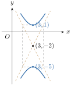
រកសមីការស្តង់ដានៃអ៊ីពែបូលដែលមានកំណុំត្រង់ចំណុច \(\displaystyle (7, 1)\) និង \(\displaystyle (-3, 1)\) ហើយអាស៊ីមតូតមានសមីការ \(\displaystyle y = \frac{3}{4}x - \frac{1}{2}\) និង \(\displaystyle y = -\frac{3}{4}x + \frac{5}{2}\) ។
មើលចម្លើយ
\(\displaystyle \frac{(x - 2)^{2}}{16} - \frac{(y - 1)^{2}}{9} = 1\) ។
3.3. សមីការទូទៅនៃអ៊ីពែបូល
ឧទាហរណ៍ : អ៊ីពែបូលមួយមានសមីការស្តង់ដា \(\displaystyle \frac{(x - 2)^{2}}{4} - \frac{(y + 3)^{2}}{9} = 1\) ដោយភាគបែងរួមនៃសមីការនេះស្មើនឹង \(\displaystyle 36\) គេបាន
សមីការដឺក្រេទី 2 នៃ \(\displaystyle x\) និង \(\displaystyle y\) ហៅថា សមីការទូទៅនៃអ៊ីពែបូល ។
សមីការដឺក្រេទី 2 មានរាង \(\displaystyle Ax^{2} + By^{2} + Cx + Dy + E = 0\) ដែល \(\displaystyle AB < 0\) ជាសមីការទូទៅនៃអ៊ីពែបូល ។
អ៊ីពែបូលមួយមានសមីការទូទៅ \(\displaystyle 4x^{2} - 9y^{2} + 32x + 18y + 91 = 0\) ។
- ក. បំប្លែងសមីការនេះ ជាសមីការស្តង់ដា
- ខ. រកកូអរដោនេនៃផ្ចិត កំពូល កំណុំ និងសមីការបន្ទាត់អាស៊ីមតូតនៃអ៊ីពែបូល ។
- ក.
បំប្លែងសមីការ \(\displaystyle 4x^{2} - 9y^{2} + 32x + 18y + 91 = 0\) ជាសមីការស្តង់ដា
គេបាន\[\begin{aligned} 4x^{2} - 9y^{2} + 32x + 18y + 91 &= 0 \\ 4x^{2} + 32x - 9y^{2} + 18y + 91 &= 0 \\ 4(x^{2} + 8x) - 9(y^{2} - 2y) + 91 &= 0 \\ 4(x^{2} + 8x + 16 - 16) - 9(y^{2} - 2y + 1 - 1) + 91 &= 0 \\ 4(x + 4)^{2} - 64 - 9(y - 1)^{2} + 9 + 91 &= 0 \\ 4(x + 4)^{2} - 9(y - 1)^{2} &= -36 \end{aligned}\]នាំឱ្យ \(\displaystyle \frac{(y - 1)^{2}}{4} - \frac{(x + 4)^{2}}{9} = 1\) ជាសមីការស្តង់ដានៃអ៊ីពែបូលមានអ័ក្សទទឹងស្របនឹងអ័ក្សអរដោនេ ។
- ខ.
កំណត់កូអរដោនេផ្ចិត កំពូល កំណុំ និងសមីការបន្ទាត់អាស៊ីមតូតនៃអ៊ីពែបូល
ដោយ \(\displaystyle \frac{(y - 1)^{2}}{4} - \frac{(x + 4)^{2}}{9} = 1\) នោះ \(\displaystyle h = -4\), \(\displaystyle k = 1\), \(\displaystyle a^{2} = 4\), \(\displaystyle b^{2} = 9\), \(\displaystyle c^{2} = a^{2} + b^{2} = 4 + 9 = 13\) ឬ \(\displaystyle a = 2\), \(\displaystyle b = 3\), \(\displaystyle c = \sqrt{13}\)
គេបាន- កូអរដោនេផ្ចិត \(\displaystyle I(h, k) = I(-4, 1)\)
- កូអរដោនេកំពូលទាំងពីរ \(\displaystyle V(h, k \pm a) = V(-4, 1 \pm 2) = \begin{cases} V_{1}(-4, 3) \\ V_{2}(-4, -1) \end{cases}\)
- កូអរដោនេកំណុំទាំងពីរ \(\displaystyle F(h, k \pm c) = F(-4, 1 \pm \sqrt{13}) = \begin{cases} F_{1}(-4, 1 + \sqrt{13}) \\ F_{2}(-4, 1 - \sqrt{13}) \end{cases}\)
- សមីការអាស៊ីមតូតទាំងពីរគឺ \(\displaystyle y = k + \frac{a}{b}(x - h) = 1 + \frac{2}{3}(x + 4) = \frac{2}{3}x + \frac{11}{3}\)
\(\displaystyle y = k - \frac{a}{b}(x - h) = 1 - \frac{2}{3}(x + 4) = -\frac{2}{3}x - \frac{5}{3}\) ។
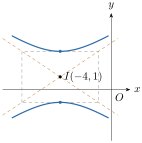
រកកូអរដោនេផ្ចិត កំពូល កំណុំ និងសមីការអាស៊ីមតូតនៃអ៊ីពែបូល ហើយសង់អ៊ីពែបូលនីមួយៗខាងក្រោម៖
- ក. \(\displaystyle -x^{2} + 4y^{2} - 2x - 16y + 11 = 0\)
- ខ. \(\displaystyle 25x^{2} - 16y^{2} + 250x + 32y + 209 = 0\) ។
មើលចម្លើយ
- ក. ផ្ចិត \(\displaystyle I(-1, 2)\) កំពូល \(\displaystyle V_{1}(-1, 1)\), \(\displaystyle V_{2}(-1, 3)\) កំណុំ \(\displaystyle F_{1}(-1, 2 + \sqrt{5})\), \(\displaystyle F_{2}(-1, 2 - \sqrt{5})\) និងសមីការអាស៊ីមតូត \(\displaystyle y = \frac{1}{2}x + \frac{5}{2}\), \(\displaystyle y = -\frac{1}{2}x + \frac{3}{2}\) ។
- ខ. ផ្ចិត \(\displaystyle I(-5, 1)\) កំពូល \(\displaystyle V_{1}(-9, 1)\), \(\displaystyle V_{2}(-1, 1)\) កំណុំ \(\displaystyle F_{1}(-5 + \sqrt{41}, 1)\), \(\displaystyle F_{2}(-5 - \sqrt{41}, 1)\) និងសមីការអាស៊ីមតូត \(\displaystyle y = \frac{5}{4}x + \frac{29}{4}\), \(\displaystyle y = -\frac{5}{4}x - \frac{21}{4}\) ។
4. អ៊ុចសង់ទ្រីស៊ីតេ
និយមន័យ អ៊ុចសង់ទ្រីស៊ីតេ \(\displaystyle e\) នៃអ៊ីពែបូលគឺជាផលធៀបរវាង \(\displaystyle c\) ដែលជាចម្ងាយពីផ្ចិតទៅកំណុំ និង \(\displaystyle a\) ដែលជាចម្ងាយពីផ្ចិតទៅកំពូលនៃអ៊ីពែបូល \(\displaystyle e = \frac{c}{a}\) ។
គ្រប់អ៊ីពែបូលមានកំណុំនៅលើអ័ក្សទទឹងនៃអ៊ីពែបូលដែល \(\displaystyle c > a > 0\) នោះ \(\displaystyle \frac{c}{a} > 1\) ឬ \(\displaystyle e > 1\) ។
5. លក្ខណៈចំណាំងផ្លាតនៃអ៊ីពែបូល
អ៊ីពែបូលមានលក្ខណៈចំណាំងផ្លាតដូចគ្នានឹងអេលីបដែរ ។ បើ \(\displaystyle l\) ជាបន្ទាត់ប៉ះទៅនឹងអ៊ីពែបូលត្រង់ចំណុច \(\displaystyle P\) ដែលមានកំណុំ \(\displaystyle F_{1}\) និង \(\displaystyle F_{2}\) ដូចរូប ។ បើ \(\displaystyle \alpha\) ជាមុំស្រួចផ្គុំឡើងរវាង \(\displaystyle F_{2}P\) និង \(\displaystyle l\) ហើយ \(\displaystyle \beta\) ជាមុំផ្គុំរវាង \(\displaystyle F_{1}P\) និង \(\displaystyle l\) នោះ \(\displaystyle \alpha = \beta\) ។ បើកាំពន្លឺមានទិសដៅតាមបន្ទាត់ \(\displaystyle l_{1}\) កាត់តាមចំណុច \(\displaystyle F_{1}\) និង \(\displaystyle P\) នោះវានឹងចាំងផ្លាតត្រឡប់ពីចំណុច \(\displaystyle P\) តាមបន្ទាត់ \(\displaystyle l_{2}\) កាត់តាមចំណុច \(\displaystyle F_{2}\) និង \(\displaystyle P\) ។ លក្ខណៈនេះគេអាចប្រើក្នុងការកំណត់កែវយឺតប្រភេទ Cassegrain ។
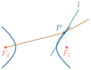
ឧទាហរណ៍ : កប៉ាល់មួយកំពុងធ្វើដំណើរស្របនឹងឆ្នេរត្រង់ជាប់មាត់សមុទ្រ ហើយមានចម្ងាយ \(\displaystyle 160\text{ km}\) ពីមាត់សមុទ្រកប៉ាល់នេះបានបង្ហាញនូវសញ្ញាគ្រោះថ្នាក់ដែលត្រូវបានទទួលដោយស្ថានីយពីរ \(\displaystyle A\) និង \(\displaystyle B\) ហើយមានចម្ងាយពីគ្នា \(\displaystyle 320\text{ km}\) (ដូចរូបស្តាំ) ។ តាមការវាស់រយៈពេលខុសគ្នាដោយមន្ត្រីស្ថានីយក្នុងការចាប់បានសញ្ញាគ្រោះថ្នាក់កំណត់ឃើញថា កប៉ាល់នេះនៅជិតស្ថានីយ \(\displaystyle B\) ជាងស្ថានីយ \(\displaystyle A\) ចម្ងាយ \(\displaystyle 256\text{ km}\) ។ តើកប៉ាល់នេះមានទីតាំងនៅត្រង់ចំណុចណា?
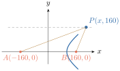
តាង \(\displaystyle d_{1}\) ចម្ងាយពីកប៉ាល់ទៅស្ថានីយ \(\displaystyle A\) \(\displaystyle d_{2}\) ចម្ងាយពីកប៉ាល់ទៅស្ថានីយ \(\displaystyle B\) គេមាន \(\displaystyle d_{1} - d_{2} = 256 = 2a\) នាំឱ្យ \(\displaystyle a = 128\) ដោយ \(\displaystyle c = \frac{320}{2} = 160\) និង \(\displaystyle c^{2} = a^{2} + b^{2}\) នោះ \(\displaystyle b^{2} = c^{2} - a^{2}\) \(\displaystyle b^{2} = 160^{2} - 128^{2} \implies b = \sqrt{160^{2} - 128^{2}} = 96\) សមីការស្តង់ដានៃអ៊ីពែបូលដែលមានកំណុំមួយនៅត្រង់ចំណុច \(\displaystyle B\) ហើយកាត់តាមកូអរដោនេនៃកប៉ាល់នៅត្រង់ចំណុច \(\displaystyle P(x, y)\) គឺ \(\displaystyle \frac{x^{2}}{128^{2}} - \frac{y^{2}}{96^{2}} = 1\) ។ ដោយ \(\displaystyle y = 160\) គេបាន \(\displaystyle \frac{x^{2}}{128^{2}} - \frac{160^{2}}{96^{2}} = 1 \implies x = \sqrt{\left(1 + \frac{160^{2}}{96^{2}}\right)128^{2}} \approx 128\sqrt{3.7}\) កូអរដោនេនៃចំណុចដែលកប៉ាល់ស្ថិតនៅគឺ \(\displaystyle (128\sqrt{3.7}, 160)\) ។
លំហាត់
សង់អ៊ីពែបូលនិងអាស៊ីមតូតរបស់វា
- ក. \(\displaystyle \frac{x^{2}}{9} - \frac{y^{2}}{16} = 1\)
- ខ. \(\displaystyle \frac{y^{2}}{9} - \frac{x^{2}}{16} = 1\)
- គ. \(\displaystyle y^{2} - 4x^{2} = 16\)
- ឃ. \(\displaystyle x^{2} - y^{2} = 1\)
- ង. \(\displaystyle x^{2} - 5y^{2} = 25\)
- ច. \(\displaystyle y^{2} - x^{2} = 25\) ។
រកផ្ចិត កំពូល កំណុំ អ៊ុចសង់ទ្រីស៊ីតេ និងអាស៊ីមតូតនៃអ៊ីពែបូល បន្ទាប់មកសង់អ៊ីពែបូលនោះ
- ក. \(\displaystyle y^{2} - \frac{x^{2}}{4} = 1\)
- ខ. \(\displaystyle 5y^{2} = 4x^{2} + 20\)
- គ. \(\displaystyle \frac{(x - 1)^{2}}{4} - \frac{(y + 2)^{2}}{1} = 1\)
- ឃ. \(\displaystyle \frac{(x - 2)^{2}}{4} - \frac{(y + 3)^{2}}{1} = 1\)
- ង. \(\displaystyle 4(x - 2)^{2} - 9(y + 3)^{2} = 36\)
- ច. \(\displaystyle 9x^{2} - y^{2} - 36x - 6y + 18 = 0\)
- ឆ. \(\displaystyle 4x^{2} - y^{2} + 8x + 6y - 1 = 0\) ។
រកផ្ចិត កំណុំ កំពូល និងអាស៊ីមតូតនៃអ៊ីពែបូល បន្ទាប់មកសង់អ៊ីពែបូលនោះ
- ក. \(\displaystyle x^{2} - y^{2} - 2x - 2y - 1 = 0\)
- ខ. \(\displaystyle y^{2} - 4x^{2} - 16x - 2y - 19 = 0\)
- គ. \(\displaystyle 3y^{2} - x^{2} + 6x - 12y = 0\)
- ឃ. \(\displaystyle 4x^{2} - 5y^{2} - 16x + 10y + 31 = 0\) ។
រកសមីការស្តង់ដានៃអ៊ីពែបូលដែលផ្ទៀងផ្ទាត់លក្ខខណ្ឌដែលឱ្យ ៖
- ក. ផ្ចិតមានកូអរដោនេ \(\displaystyle (0, 0)\) កំពូលមានកូអរដោនេ \(\displaystyle (0, 2)\) និងកំណុំមានកូអរដោនេ \(\displaystyle (0, 4)\) ។
- ខ. ផ្ចិតមានកូអរដោនេ \(\displaystyle (0, 0)\) កំពូលមានកូអរដោនេ \(\displaystyle (3, 0)\) និងកំណុំមានកូអរដោនេ \(\displaystyle (5, 0)\) ។
- គ. កំពូលទាំងពីរមានកូអរដោនេ \(\displaystyle (\pm 1, 0)\) និងអាស៊ីមតូតទាំងពីរមានសមីការ \(\displaystyle y = \pm 3x\) ។
- ឃ. កំពូលទាំងពីរមានកូអរដោនេ \(\displaystyle (0, \pm 3)\) និងអាស៊ីមតូតទាំងពីរមានសមីការ \(\displaystyle y = \pm 3x\) ។
- ង. កំពូលទាំងពីរមានកូអរដោនេ \(\displaystyle (2, \pm 3)\) និងចំណុចមួយនៅលើក្រាបមានកូអរដោនេ \(\displaystyle (0, 5)\) ។
- រកសមីការស្តង់ដានៃអ៊ីពែបូលដែលចំពោះគ្រប់ចំណុចនៅលើអ៊ីពែបូលមានផលដកចម្ងាយរបស់វាពីចំណុច \(\displaystyle (2, 2)\) និង \(\displaystyle (10, 2)\) ស្មើនឹង \(\displaystyle 6\) ។
- រកសមីការស្តង់ដានៃអ៊ីពែបូលដែលចំពោះគ្រប់ចំណុចនៅលើអ៊ីពែបូលមានផលដកចម្ងាយរបស់វាពីចំណុច \(\displaystyle (-3, 0)\) និង \(\displaystyle (-3, -3)\) ស្មើនឹង \(\displaystyle 2\) ។
- បង្ហាញថាបន្ទាត់ប៉ះទៅនឹងអ៊ីពែបូល \(\displaystyle \frac{x^{2}}{a^{2}} - \frac{y^{2}}{b^{2}} = 1\) ត្រង់ចំណុច \(\displaystyle (x_{0}, y_{0})\) មានសមីការ \(\displaystyle \frac{x_{0}x}{a^{2}} - \frac{y_{0}y}{b^{2}} = 1\) ។
- កំណុំទាំងពីរនៃអ៊ីពែបូលគឺ \(\displaystyle F_{1}(0, 3)\) និង \(\displaystyle F_{2}(0, -3)\) ហើយ \(\displaystyle P\) ជាចំណុចមួយនៅលើអ៊ីពែបូលដែលមានផលដកចម្ងាយរបស់វាពីចំណុច \(\displaystyle F_{1}\) និង \(\displaystyle F_{2}\) ស្មើនឹង \(\displaystyle 2\) ឯកតា ។ ប្រើនិយមន័យនៃអ៊ីពែបូលទាញរកសមីការស្តង់ដានៃអ៊ីពែបូលនោះ ។
- រកសមីការនៃអ៊ីពែបូលដែលមានកំណុំ \(\displaystyle (\pm 4, 0)\) ហើយតម្លៃនៃផលដកចម្ងាយពីចំណុចមួយនៅលើអ៊ីពែបូលទៅកំណុំទាំងពីរស្មើនឹង \(\displaystyle 4\) ។
- រកសមីការបន្ទាត់ប៉ះទៅនឹងអ៊ីពែបូល \(\displaystyle 9x^{2} - 4y^{2} = 36\) ដែលកាត់តាមចំណុច \(\displaystyle (1, 0)\) ។
អ្នករូបវិទ្យាម្នាក់បានរកឃើញថា នៅពេលភាគល្អិតអាល់ហ្វាត្រូវបានបាញ់ចេញឆ្ពោះទៅណ្វៃយ៉ូនៃអាតូមមួយដោយវាបានច្រានចេញពីណ្វៃយ៉ូតាមគន្លងអ៊ីពែបូល ។ រូបខាងស្តាំនេះបង្ហាញពីគន្លងនៃភាគល្អិតដែលចាប់ផ្តើមឆ្ពោះទៅគល់អ័ក្សកូអរដោនេតាមបន្ទាត់មួយមានសមីការ \(\displaystyle y = \frac{1}{2}x\) ហើយធ្លាក់មក \(\displaystyle 3\) ឯកតាពីណ្វៃយ៉ូ ។ ចូររកសមីការនៃគន្លង ។
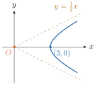
ចម្លើយលំហាត់
- ក. ផ្ចិត \(\displaystyle (0, 0)\), កំពូល \(\displaystyle (\pm 3, 0)\), កំណុំ \(\displaystyle (\pm 5, 0)\), អាស៊ីមតូត \(\displaystyle y = \pm \frac{4}{3}x\)
- ខ. ផ្ចិត \(\displaystyle (0, 0)\), កំពូល \(\displaystyle (0, \pm 3)\), កំណុំ \(\displaystyle (0, \pm 5)\), អាស៊ីមតូត \(\displaystyle y = \pm \frac{3}{4}x\)
- គ. \(\displaystyle \frac{y^{2}}{16} - \frac{x^{2}}{4} = 1\), ផ្ចិត \(\displaystyle (0, 0)\), កំពូល \(\displaystyle (0, \pm 4)\), កំណុំ \(\displaystyle (0, \pm 2\sqrt{5})\), អាស៊ីមតូត \(\displaystyle y = \pm 2x\)
- ឃ. ផ្ចិត \(\displaystyle (0, 0)\), កំពូល \(\displaystyle (\pm 1, 0)\), កំណុំ \(\displaystyle (\pm \sqrt{2}, 0)\), អាស៊ីមតូត \(\displaystyle y = \pm x\)
- ង. \(\displaystyle \frac{x^{2}}{25} - \frac{y^{2}}{5} = 1\), ផ្ចិត \(\displaystyle (0, 0)\), កំពូល \(\displaystyle (\pm 5, 0)\), កំណុំ \(\displaystyle (\pm \sqrt{30}, 0)\), អាស៊ីមតូត \(\displaystyle y = \pm \frac{\sqrt{5}}{5}x\)
- ច. \(\displaystyle \frac{y^{2}}{25} - \frac{x^{2}}{25} = 1\), ផ្ចិត \(\displaystyle (0, 0)\), កំពូល \(\displaystyle (0, \pm 5)\), កំណុំ \(\displaystyle (0, \pm 5\sqrt{2})\), អាស៊ីមតូត \(\displaystyle y = \pm x\) ។
- ក. ផ្ចិត \(\displaystyle (0, 0)\), កំពូល \(\displaystyle (0, \pm 1)\), កំណុំ \(\displaystyle (0, \pm \sqrt{5})\), \(\displaystyle e = \sqrt{5}\), អាស៊ីមតូត \(\displaystyle y = \pm \frac{1}{2}x\)
- ខ. \(\displaystyle \frac{y^{2}}{4} - \frac{x^{2}}{5} = 1\), ផ្ចិត \(\displaystyle (0, 0)\), កំពូល \(\displaystyle (0, \pm 2)\), កំណុំ \(\displaystyle (0, \pm 3)\), \(\displaystyle e = \frac{3}{2}\), អាស៊ីមតូត \(\displaystyle y = \pm \frac{2\sqrt{5}}{5}x\)
- គ. ផ្ចិត \(\displaystyle (1, -2)\), កំពូល \(\displaystyle (-1, -2)\) និង \(\displaystyle (3, -2)\), កំណុំ \(\displaystyle (1 \pm \sqrt{5}, -2)\), \(\displaystyle e = \frac{\sqrt{5}}{2}\), អាស៊ីមតូត \(\displaystyle y = -2 \pm \frac{1}{2}(x - 1)\)
- ឃ. ផ្ចិត \(\displaystyle (2, -3)\), កំពូល \(\displaystyle (0, -3)\) និង \(\displaystyle (4, -3)\), កំណុំ \(\displaystyle (2 \pm \sqrt{5}, -3)\), \(\displaystyle e = \frac{\sqrt{5}}{2}\), អាស៊ីមតូត \(\displaystyle y = -3 \pm \frac{1}{2}(x - 2)\)
- ង. \(\displaystyle \frac{(x - 2)^{2}}{9} - \frac{(y + 3)^{2}}{4} = 1\), ផ្ចិត \(\displaystyle (2, -3)\), កំពូល \(\displaystyle (-1, -3)\) និង \(\displaystyle (5, -3)\), កំណុំ \(\displaystyle (2 \pm \sqrt{13}, -3)\), \(\displaystyle e = \frac{\sqrt{13}}{3}\), អាស៊ីមតូត \(\displaystyle y = -3 \pm \frac{2}{3}(x - 2)\)
- ច. \(\displaystyle (x - 2)^{2} - \frac{(y + 3)^{2}}{9} = 1\), ផ្ចិត \(\displaystyle (2, -3)\), កំពូល \(\displaystyle (1, -3)\) និង \(\displaystyle (3, -3)\), កំណុំ \(\displaystyle (2 \pm \sqrt{10}, -3)\), \(\displaystyle e = \sqrt{10}\), អាស៊ីមតូត \(\displaystyle y = -3 \pm 3(x - 2)\)
- ឆ. \(\displaystyle \frac{(y - 3)^{2}}{4} - (x + 1)^{2} = 1\), ផ្ចិត \(\displaystyle (-1, 3)\), កំពូល \(\displaystyle (-1, 1)\) និង \(\displaystyle (-1, 5)\), កំណុំ \(\displaystyle (-1, 3 \pm \sqrt{5})\), \(\displaystyle e = \frac{\sqrt{5}}{2}\), អាស៊ីមតូត \(\displaystyle y = 3 \pm 2(x + 1)\) ។
- ក. \(\displaystyle (x - 1)^{2} - (y + 1)^{2} = 1\), ផ្ចិត \(\displaystyle (1, -1)\), កំពូល \(\displaystyle (0, -1)\) និង \(\displaystyle (2, -1)\), កំណុំ \(\displaystyle (1 \pm \sqrt{2}, -1)\), អាស៊ីមតូត \(\displaystyle y = -1 \pm (x - 1)\)
- ខ. \(\displaystyle \frac{(y - 1)^{2}}{4} - (x + 2)^{2} = 1\), ផ្ចិត \(\displaystyle (-2, 1)\), កំពូល \(\displaystyle (-2, -1)\) និង \(\displaystyle (-2, 3)\), កំណុំ \(\displaystyle (-2, 1 \pm \sqrt{5})\), អាស៊ីមតូត \(\displaystyle y = 1 \pm 2(x + 2)\)
- គ. \(\displaystyle (y - 2)^{2} - \frac{(x - 3)^{2}}{3} = 1\), ផ្ចិត \(\displaystyle (3, 2)\), កំពូល \(\displaystyle (3, 1)\) និង \(\displaystyle (3, 3)\), កំណុំ \(\displaystyle (3, 0)\) និង \(\displaystyle (3, 4)\), អាស៊ីមតូត \(\displaystyle y = 2 \pm \frac{\sqrt{3}}{3}(x - 3)\)
- ឃ. \(\displaystyle \frac{(y - 1)^{2}}{4} - \frac{(x - 2)^{2}}{5} = 1\), ផ្ចិត \(\displaystyle (2, 1)\), កំពូល \(\displaystyle (2, -1)\) និង \(\displaystyle (2, 3)\), កំណុំ \(\displaystyle (2, -2)\) និង \(\displaystyle (2, 4)\), អាស៊ីមតូត \(\displaystyle y = 1 \pm \frac{2\sqrt{5}}{5}(x - 2)\) ។
- ក. \(\displaystyle \frac{y^{2}}{4} - \frac{x^{2}}{12} = 1\)
- ខ. \(\displaystyle \frac{x^{2}}{9} - \frac{y^{2}}{16} = 1\)
- គ. \(\displaystyle x^{2} - \frac{y^{2}}{9} = 1\)
- ឃ. \(\displaystyle \frac{y^{2}}{9} - x^{2} = 1\)
- ង. \(\displaystyle \frac{y^{2}}{9} - \frac{4(x - 2)^{2}}{9} = 1\) ។
- \(\displaystyle \frac{(x - 6)^{2}}{9} - \frac{(y - 2)^{2}}{7} = 1\) ។
- \(\displaystyle \left(y + \frac{3}{2}\right)^{2} - \frac{4(x + 3)^{2}}{5} = 1\) ។
- ដោយ \(\displaystyle y = \pm \frac{b}{a}\sqrt{x^{2} - a^{2}}\) ឬអនុវត្តដេរីវេដោយប្រយោលលើ \(\displaystyle \frac{x^{2}}{a^{2}} - \frac{y^{2}}{b^{2}} = 1\) បាន \(\displaystyle \frac{2x}{a^{2}} - \frac{2y y'}{b^{2}} = 0 \implies y'(x_{0}, y_{0}) = \frac{b^{2}x_{0}}{a^{2}y_{0}}\) (\(\displaystyle y_{0} \neq 0\)) ។ សមីការបន្ទាត់ប៉ះគឺ \(\displaystyle y - y_{0} = \frac{b^{2}x_{0}}{a^{2}y_{0}}(x - x_{0}) \iff \frac{x_{0}x}{a^{2}} - \frac{y_{0}y}{b^{2}} = \frac{x_{0}^{2}}{a^{2}} - \frac{y_{0}^{2}}{b^{2}} = 1\) (ករណី \(\displaystyle y_{0} = 0 \implies x_{0} = \pm a\) ក៏ផ្ទៀងផ្ទាត់ \(\displaystyle x = \pm a\) ដែរ) ។
- \(\displaystyle y^{2} - \frac{x^{2}}{8} = 1\) ។
- \(\displaystyle \frac{x^{2}}{4} - \frac{y^{2}}{12} = 1\) ។
- \(\displaystyle y = \sqrt{3}(x - 1)\) និង \(\displaystyle y = -\sqrt{3}(x - 1)\) ។
- \(\displaystyle \frac{x^{2}}{9} - \frac{4y^{2}}{9} = 1\) (\(\displaystyle x \ge 3\)) ។
មេរៀនសង្ខេប
សមីការស្តង់ដានៃប៉ារ៉ាបូលដែលមានកំពូលត្រង់គល់អ័ក្សកូអរដោនេ
កំពូល កំណុំ បន្ទាត់ប្រាប់ទិស សមីការស្តង់ដា ពណ៌នា \(\displaystyle (0, 0)\) \(\displaystyle (p, 0)\) \(\displaystyle x = -p\) \(\displaystyle y^{2} = 4px\) អ័ក្សឆ្លុះជាអ័ក្សអាប់ស៊ីស
\(\displaystyle \bullet\) \(\displaystyle p > 0\) ប៉ារ៉ាបូលបែរភាពផតទៅរកទិស \(\displaystyle x > 0\)
\(\displaystyle \bullet\) \(\displaystyle p < 0\) ប៉ារ៉ាបូលបែរភាពផតទៅរកទិស \(\displaystyle x < 0\)\(\displaystyle (0, 0)\) \(\displaystyle (0, p)\) \(\displaystyle y = -p\) \(\displaystyle x^{2} = 4py\) អ័ក្សឆ្លុះជាអ័ក្សអរដោនេ
\(\displaystyle \bullet\) \(\displaystyle p > 0\) ប៉ារ៉ាបូលបែរភាពផតទៅរកទិស \(\displaystyle y > 0\)
\(\displaystyle \bullet\) \(\displaystyle p < 0\) ប៉ារ៉ាបូលបែរភាពផតទៅរកទិស \(\displaystyle y < 0\)សមីការស្តង់ដានៃប៉ារ៉ាបូលដែលមានកំពូលខុសពីគល់អ័ក្សកូអរដោនេ
កំពូល កំណុំ បន្ទាត់ប្រាប់ទិស សមីការស្តង់ដា ពណ៌នា \(\displaystyle (h, k)\) \(\displaystyle (h + p, k)\) \(\displaystyle x = h - p\) \(\displaystyle (y - k)^{2} = 4p(x - h)\) អ័ក្សឆ្លុះជាអ័ក្សអាប់ស៊ីស
\(\displaystyle \bullet\) \(\displaystyle p > 0\) ប៉ារ៉ាបូលបែរភាពផតទៅរកទិស \(\displaystyle x > 0\)
\(\displaystyle \bullet\) \(\displaystyle p < 0\) ប៉ារ៉ាបូលបែរភាពផតទៅរកទិស \(\displaystyle x < 0\)\(\displaystyle (h, k)\) \(\displaystyle (h, k + p)\) \(\displaystyle y = k - p\) \(\displaystyle (x - h)^{2} = 4p(y - k)\) អ័ក្សឆ្លុះជាអ័ក្សអរដោនេ
\(\displaystyle \bullet\) \(\displaystyle p > 0\) ប៉ារ៉ាបូលបែរភាពផតទៅរកទិស \(\displaystyle y > 0\)
\(\displaystyle \bullet\) \(\displaystyle p < 0\) ប៉ារ៉ាបូលបែរភាពផតទៅរកទិស \(\displaystyle y < 0\)សមីការស្តង់ដានៃអេលីបដែលមានផ្ចិតជាគល់អ័ក្សកូអរដោនេ
ផ្ចិត អ័ក្សធំ កំណុំ កំពូល សមីការស្តង់ដា \(\displaystyle (0, 0)\) នៅលើអ័ក្សអាប់ស៊ីស \(\displaystyle (\pm c, 0)\) \(\displaystyle (\pm a, 0)\) \(\displaystyle \frac{x^{2}}{a^{2}} + \frac{y^{2}}{b^{2}} = 1 \quad a > b > 0\) ដែល \(\displaystyle c^{2} = a^{2} - b^{2}\) \(\displaystyle (0, 0)\) នៅលើអ័ក្សអរដោនេ \(\displaystyle (0, \pm c)\) \(\displaystyle (0, \pm a)\) \(\displaystyle \frac{x^{2}}{b^{2}} + \frac{y^{2}}{a^{2}} = 1 \quad a > b > 0\) ដែល \(\displaystyle c^{2} = a^{2} - b^{2}\) សមីការស្តង់ដានៃអេលីបដែលមានផ្ចិតខុសពីគល់អ័ក្សកូអរដោនេ
ផ្ចិត អ័ក្សធំ កំណុំ កំពូល សមីការស្តង់ដា \(\displaystyle (h, k)\) ស្របនឹងអ័ក្សដេក \(\displaystyle (h \pm c, k)\) \(\displaystyle (h \pm a, k)\) \(\displaystyle \frac{(x - h)^{2}}{a^{2}} + \frac{(y - k)^{2}}{b^{2}} = 1 \quad a > b > 0\) ដែល \(\displaystyle c^{2} = a^{2} - b^{2}\) \(\displaystyle (h, k)\) ស្របនឹងអ័ក្សឈរ \(\displaystyle (h, k \pm c)\) \(\displaystyle (h, k \pm a)\) \(\displaystyle \frac{(x - h)^{2}}{b^{2}} + \frac{(y - k)^{2}}{a^{2}} = 1 \quad a > b > 0\) ដែល \(\displaystyle c^{2} = a^{2} - b^{2}\) សមីការស្តង់ដានៃអ៊ីពែបូលដែលមានផ្ចិតជាគល់អ័ក្សកូអរដោនេ
ផ្ចិត អ័ក្សទទឹង កំណុំ កំពូល សមីការស្តង់ដា អាស៊ីមតូត \(\displaystyle (0, 0)\) នៅលើអ័ក្សអាប់ស៊ីស \(\displaystyle (c, 0)\) និង \(\displaystyle (-c, 0)\) \(\displaystyle (a, 0)\) និង \(\displaystyle (-a, 0)\) \(\displaystyle \frac{x^{2}}{a^{2}} - \frac{y^{2}}{b^{2}} = 1\) ដែល \(\displaystyle a > 0, b > 0\) ហើយ \(\displaystyle c^{2} = a^{2} + b^{2}\) \(\displaystyle y = \frac{b}{a}x\) និង \(\displaystyle y = -\frac{b}{a}x\) \(\displaystyle (0, 0)\) នៅលើអ័ក្សអរដោនេ \(\displaystyle (0, c)\) និង \(\displaystyle (0, -c)\) \(\displaystyle (0, a)\) និង \(\displaystyle (0, -a)\) \(\displaystyle \frac{y^{2}}{a^{2}} - \frac{x^{2}}{b^{2}} = 1\) ដែល \(\displaystyle a > 0, b > 0\) ហើយ \(\displaystyle c^{2} = a^{2} + b^{2}\) \(\displaystyle y = \frac{a}{b}x\) និង \(\displaystyle y = -\frac{a}{b}x\) សមីការស្តង់ដានៃអ៊ីពែបូលដែលមានផ្ចិតខុសពីគល់អ័ក្សកូអរដោនេ
ផ្ចិត អ័ក្សទទឹង កំណុំ កំពូល សមីការស្តង់ដា អាស៊ីមតូត \(\displaystyle (h, k)\) ស្របនឹងអ័ក្សអាប់ស៊ីស \(\displaystyle (h + c, k)\) និង \(\displaystyle (h - c, k)\) \(\displaystyle (h - a, k)\) និង \(\displaystyle (h + a, k)\) \(\displaystyle \frac{(x - h)^{2}}{a^{2}} - \frac{(y - k)^{2}}{b^{2}} = 1\) ដែល \(\displaystyle a > 0, b > 0\) និង \(\displaystyle c^{2} = a^{2} + b^{2}\) \(\displaystyle y = k + \frac{b}{a}(x - h)\) និង \(\displaystyle y = k - \frac{b}{a}(x - h)\) \(\displaystyle (h, k)\) ស្របនឹងអ័ក្សអរដោនេ \(\displaystyle (h, k + c)\) និង \(\displaystyle (h, k - c)\) \(\displaystyle (h, k + a)\) និង \(\displaystyle (h, k - a)\) \(\displaystyle \frac{(y - k)^{2}}{a^{2}} - \frac{(x - h)^{2}}{b^{2}} = 1\) ដែល \(\displaystyle a > 0, b > 0\) និង \(\displaystyle c^{2} = a^{2} + b^{2}\) \(\displaystyle y = k + \frac{a}{b}(x - h)\) និង \(\displaystyle y = k - \frac{a}{b}(x - h)\)
លំហាត់ជំពូក 10
ចូរបញ្ជាក់ប្រភេទសមីការនីមួយៗ និងគូសក្រាបរបស់វា
- ក. \(\displaystyle y^{2} - 12y - 8x + 20 = 0\)
- ខ. \(\displaystyle 3x^{2} + 2y^{2} - 12x + 12y + 29 = 0\)
- គ. \(\displaystyle 3x^{2} - 2y^{2} + 24x + 12y + 24 = 0\)
- ឃ. \(\displaystyle x^{2} - 6x + 2y + 9 = 0\) ។
រកសមីការប៉ារ៉ាបូលដែលកំណត់ដោយលក្ខខណ្ឌដូចខាងក្រោម៖
- ក. កំណុំ \(\displaystyle F(4, 0)\) និងកំពូល \(\displaystyle V(2, 0)\)
- ខ. កំពូល \(\displaystyle (0, 2)\) និងបន្ទាត់ប្រាប់ទិសមានសមីការ \(\displaystyle x + 3 = 0\) ។
រកសមីការនៃអេលីបនីមួយៗខាងក្រោម ៖
- ក. កំពូលទាំងពីរមានកូអរដោនេ \(\displaystyle (0, 2)\), \(\displaystyle (4, 2)\) និងមានអ៊ុចសង់ទ្រីស៊ីតេស្មើនឹង \(\displaystyle \frac{1}{2}\)
- ខ. កំពូលទាំងពីរមានកូអរដោនេ \(\displaystyle (3, 1)\), \(\displaystyle (3, 9)\) ហើយអ័ក្សតូចមានប្រវែងស្មើនឹង \(\displaystyle 6\) ឯកតា ។
រកសមីការនៃអ៊ីពែបូលនីមួយៗខាងក្រោម៖
- ក. កំណុំទាំងពីរមានកូអរដោនេ \(\displaystyle (-4, 0)\) និង \(\displaystyle (4, 0)\) ហើយតម្លៃដាច់ខាតនៃផលដកចម្ងាយពីចំណុចមួយស្ថិតនៅលើអ៊ីពែបូលទៅកំណុំទាំងពីរស្មើនឹង \(\displaystyle 4\) ។
- ខ. កំណុំទាំងពីរមានកូអរដោនេ \(\displaystyle (0, 0)\) និង \(\displaystyle (8, 0)\) ហើយអាស៊ីមតូតទាំងពីរមានសមីការ \(\displaystyle y = 2(x - 4)\) និង \(\displaystyle y = -2(x - 4)\) ។
- រកសមីការនៃបន្ទាត់ប៉ះទៅនឹងប៉ារ៉ាបូលមានសមីការ \(\displaystyle y = x^{2} - 2x + 2\) ហើយកែងទៅនឹងបន្ទាត់មានសមីការ \(\displaystyle y = x - 2\) ។
- បង្ហាញថា បន្ទាត់ប៉ះទៅនឹងអេលីប \(\displaystyle \frac{x^{2}}{a^{2}} + \frac{y^{2}}{b^{2}} = 1\) ត្រង់ចំណុច \(\displaystyle (x_{0}, y_{0})\) មានសមីការ \(\displaystyle \frac{x_{0}}{a^{2}}x + \frac{y_{0}}{b^{2}}y = 1\) ។
- រកតម្លៃ \(\displaystyle a\) និង \(\displaystyle b\) ដើម្បីឱ្យអ៊ីពែបូល \(\displaystyle \frac{x^{2}}{a^{2}} - \frac{y^{2}}{b^{2}} = 1\) ប៉ះទៅនឹងបន្ទាត់នៃសមីការ \(\displaystyle 2x - y - 4 = 0\) រួចគណនាតម្លៃ \(\displaystyle a\) បើ \(\displaystyle b = 2\) ។
- រកវិមាត្រនៃចតុកោណកែងដែលមានផ្ទៃក្រឡាអតិបរមាអាចចារឹកក្នុងអេលីប \(\displaystyle \frac{x^{2}}{a^{2}} + \frac{y^{2}}{b^{2}} = 1\) ។
អាងមួយមានរាងជាអេលីប ។ អ័ក្សធំមានប្រវែង \(\displaystyle 10\text{ m}\) និងអ័ក្សតូចមានប្រវែង \(\displaystyle 6\text{ m}\) ។
- ក. សរសេរសមីការនៃអេលីប
- ខ. រកប្រវែងទទឹងអាងនៅត្រង់ចំណុចមួយនៅលើអ័ក្សធំដែលមានចម្ងាយ \(\displaystyle 2\text{ m}\) ពីផ្ចិត ។
ធ្នូនៃស្ពានមួយមានរាងពាក់កណ្តាលអេលីប ដែលមានអ័ក្សធំជាអ័ក្សដេក ។ បាតនៃធ្នូកាត់ទទឹងផ្លូវនៅក្រោមស្ពានមានប្រវែង \(\displaystyle 9\text{ m}\) ហើយផ្នែកខ្ពស់បំផុតនៃធ្នូនៅចំពាក់កណ្តាលទ្រូងផ្លូវក្រោមស្ពានមានកម្ពស់ \(\displaystyle 3\text{ m}\) ដូចរូបដែលបានបង្ហាញ ។ រកប្រវែងកម្ពស់នៃធ្នូដែលមានចម្ងាយ \(\displaystyle 1.8\text{ m}\) ពីផ្ចិតនៃបាត ។
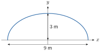
- ភាគល្អិតមួយកំពុងផ្លាស់ទីស្របនឹងដំណើរទ្រនិចនាឡិកានៅលើគន្លងរាងអេលីបមួយដែលមានសមីការ \(\displaystyle \frac{x^{2}}{10^{2}} + \frac{y^{2}}{5^{2}} = 1\) ។ ភាគល្អិតនេះបានចេញពីគន្លងនៅត្រង់ចំណុច \(\displaystyle (-8, 3)\) ហើយផ្លាស់ទីតាមបន្ទាត់មួយប៉ះទៅនឹងអេលីប ។ តើភាគល្អិតនេះនឹងកាត់អ័ក្សអរដោនេត្រង់ចំណុចណា?
ចម្លើយលំហាត់ជំពូក 10
- ក. ប៉ារ៉ាបូល៖ \(\displaystyle (y - 6)^{2} = 8(x + 2)\)
- ខ. អេលីប៖ \(\displaystyle \frac{(x - 2)^{2}}{\frac{1}{3}} + \frac{(y + 3)^{2}}{\frac{1}{2}} = 1\)
- គ. អ៊ីពែបូល៖ \(\displaystyle \frac{(x + 4)^{2}}{2} - \frac{(y - 3)^{2}}{3} = 1\)
- ឃ. ប៉ារ៉ាបូល៖ \(\displaystyle (x - 3)^{2} = -2y\) ។
- ក. \(\displaystyle y^{2} = 8(x - 2)\)
- ខ. \(\displaystyle (y - 2)^{2} = 12x\) ។
- ក. \(\displaystyle \frac{(x - 2)^{2}}{4} + \frac{(y - 2)^{2}}{3} = 1\)
- ខ. \(\displaystyle \frac{(x - 3)^{2}}{9} + \frac{(y - 5)^{2}}{16} = 1\) ។
- ក. \(\displaystyle \frac{x^{2}}{4} - \frac{y^{2}}{12} = 1\)
- ខ. \(\displaystyle \frac{(x - 4)^{2}}{\frac{16}{5}} - \frac{y^{2}}{\frac{64}{5}} = 1\) ។
- \(\displaystyle y = -x + \frac{7}{4}\) ។
- អនុវត្តដេរីវេដោយប្រយោលលើ \(\displaystyle \frac{x^{2}}{a^{2}} + \frac{y^{2}}{b^{2}} = 1\) បាន \(\displaystyle \frac{2x}{a^{2}} + \frac{2y y'}{b^{2}} = 0 \implies y'(x_{0}, y_{0}) = -\frac{b^{2}x_{0}}{a^{2}y_{0}}\) (\(\displaystyle y_{0} \neq 0\)) ។ សមីការបន្ទាត់ប៉ះគឺ \(\displaystyle y - y_{0} = -\frac{b^{2}x_{0}}{a^{2}y_{0}}(x - x_{0}) \iff \frac{x_{0}}{a^{2}}x + \frac{y_{0}}{b^{2}}y = \frac{x_{0}^{2}}{a^{2}} + \frac{y_{0}^{2}}{b^{2}} = 1\) ។
- លក្ខខណ្ឌប៉ះគឺ \(\displaystyle 4a^{2} - b^{2} = 16\) (\(\displaystyle a > 0, b > 0\)) ។ បើ \(\displaystyle b = 2\) បាន \(\displaystyle a = \sqrt{5}\) ។
- វិមាត្រគឺ \(\displaystyle a\sqrt{2}\) និង \(\displaystyle b\sqrt{2}\) (ផ្ទៃក្រឡាអតិបរមា \(\displaystyle 2ab\)) ។
- ក. \(\displaystyle \frac{x^{2}}{25} + \frac{y^{2}}{9} = 1\)
- ខ. \(\displaystyle \frac{6\sqrt{21}}{5}\text{ m} \approx 5.50\text{ m}\) ។
- \(\displaystyle \frac{3\sqrt{21}}{5}\text{ m} \approx 2.75\text{ m}\) ។
- \(\displaystyle \left(0, \frac{25}{3}\right)\) ។
“`[cite: 214, 215, 216, 217, 218, 219, 220, 221, 222, 223, 224, 225, 226, 227, 228, 229, 230, 231, 232, 233, 234, 235, 236, 237, 238, 239, 240, 241, 242, 243, 244, 245, 246, 247, 248, 249, 250]
ខ្លឹមសារ៖ សៀវភៅពុម្ពគណិតវិទ្យាថ្នាក់ទី១២ របស់ក្រសួងអប់រំ យុវជន និងកីឡា · វាយអត្ថបទ គូររូបភាពឡើងវិញ និងរៀបចំលើអនឡាញដោយលោកគ្រូ សាន សុខលី សម្រាប់ការសិក្សាដោយឥតគិតថ្លៃ និងមិនរកប្រាក់ចំណេញ។ មិនមែនជាការបោះពុម្ពផ្លូវការរបស់ក្រសួងទេ។